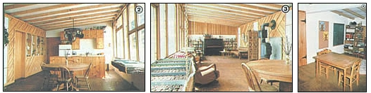
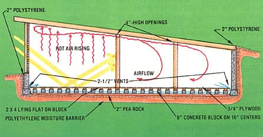
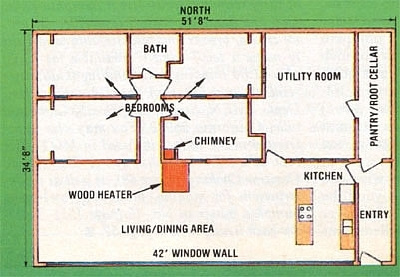

The Schonbergs built a low-budget passive solar house that sets new standards for simplicity.
My family's rustic solar home might not suit everyone. (In fact, people with plenty of money on hand could undoubtedly have found ways to sink another $20,000 to $50,000 into it!) But we're grateful and delighted to have a comfortable, efficient, 1,800-square-foot, four-bedroom dwelling at an out-of-pocket price of only about $20,000. As our county assessor pointed out, the typical house in our area costs about $30 per square foot to build . . . but we managed ours for less than $12 per!
Furthermore, for the first time, the frigid Minnesota winters can bring us that bright, warm, lazy feeling we used to get only in summer. "Who needs to go south for the cold months," commented one friend, standing in the sunshine streaming into our dining room last December, "when you have a house like this one?"
PATIENCE
Seven years ago my wife and I agreed to be patient for one more decade . . . and then, if everything worked out, we'd build a new home. In the meantime we decided to maintain our old farmhouse as best we could and be thankful for the roof over our heads. Of course, every time a drain backed up or the winter wind shook the worn wooden structure, we couldn't help dreaming of the beautiful, earth-sheltered, solar houses we kept reading about in books and magazines . . . and so we soon began to plan just how those energy-saving concepts might fit into our own home. While doing so, however, we all too frequently butted our heads against the same problem . . . most of the designs we read about were well beyond our budget.
You see, our 35-acre organic truck farm provides us with a decent living, but it certainly doesn't yield the sort of money that could pay for a $100,000 building at 16% interest. We needed to plan a house we could afford, and every dollar we could cut from its price would mean we could move in that much sooner. At the same time, though, we wouldn't settle for less than a home that would be comfortable, energy-efficient, large enough for our family of seven, and attractive. Happily enough, the design we developed (and the house we now live in) combines all those features, meets our needs . . . and was inexpensive enough to cut our ten years' wait down to seven!
EARTH SHELTERING
Three walls of our home are built into the earth, and even the south side sports a 3-1/2-foot berm. The bulkheads are 8"-thick reinforced poured concrete, insulated on the outside with 2"-thick polystyrene. We were able to excavate one day, set the forms for and pour the footings on the second, and form up and pour the walls on the third. Our total expenditure up to that point - including excavation, rental for the forms (and experienced personnel to help set them up), ready-mix concrete, and reinforcing steel - came to $2,400.
The task of forming the walls was simplified by the fact that the only windows in the building are on the south side. Because of this arrangement, however, the four bedrooms and the utility room are all without a single exterior window.
That lack of glazing presented both advantages and problems. On the positive side, the rooms have no energy-wasting glass, and we saved ourselves a bundle of money on materials . . as anyone who's priced windows can imagine. But on the negative side, we were faced with the challenge of lighting the back rooms without depending entirely on costly electricity. After checking into skylights, we decided against installing the expensive, leak-prone devices. (We weren't interested in shoveling snow from the roof-mounted glazing in the winter . . or having the sun bake down through them in the summer.)
Our solution was to install light-diffusing, translucent plastic panels in the partitions between the dark, windowless rooms and the very bright front chamber. In doing so, we used inexpensive but fragile 2' X 4' fluorescent-light covers, which run about $6.00 apiece. Since the panels are breakable, we fully expect that a runaway toy will come through one someday. Consequently, we made sure that they can be replaced easily. (As an added benefit, the fact that a person could - in an emergency - -break through the plastic without difficulty means that each room has additional potential fire exits.)
And just how successfully do the panels function? Well, we've found that they keep even the bedrooms twice removed from the south windows nearly as bright as a conventional north room with a curtained opening would be, and that the chambers immediately adjacent to the south living area are very well lighted indeed. It's a simple idea, but it works!
SOLAR HEATING
Drawing heat from the sun isn't a particularly difficult task. If you just put enough windows on the south side of a well-insulated building, it'll get toasty during even subzero weather. The real challenges in solar design are those of preventing overheating during the day and of keeping the building warm at night. And both heat storage and air circulation are necessary to meet the two goals.
So, guided by our budget and the rudimentary concept that warm air rises, we set about designing a passive circulation/storage system that would be both simple and inexpensive. We've not heard of another arrangement quite like the one we came up with, and we're delighted to report that it performs beyond our expectations. (We had standby plans, which included fans and thermostats, just in case.)
By leaving openings above the east-west partitions, we were able to assure that air rising to the ceiling of the sun room will move back into the northern parts of our house. Of course, a room - like a bottle - can take in new air only if there's a way for the old to escape. Therefore, to allow the cooler, heavier air to get out, we made a vent in the floor along the entire north wall. That cooler (but still warm) air falls beneath the floor and moves back to the south, passing under our feet. A vent running the length of the south wall completes the circulation pattern.
Concrete walls (56 tons' worth in our case) provide a good deal of heat storage capability, but the thought occurred to me that perhaps we could pack away some sun-given warmth in the air path under the floor, as well. Rather than construct an elaborate rock or water storage system, though, we decided to simply use concrete blocks that could double as thermal mass and floor joists.
Nine hundred 8" blocks sit in rows spaced on 16-inch centers (which is standard joist spacing), and all the cores are lined up on the north-south axis. Air moves through the blockto-block "cave", and enters and exits from the area beneath the floor through 2-1/2-inch vents all along the south and north walls. The concrete tunnels rest on a 2" layer of pea gravel, which - in turn - sits on a sandwich of cardboard, 0.006" polyethylene, and more cardboard. We laid 2 X 4 nailers on their sides directly on the block joists and screwed a 3/4" plywood floor to the nailers.
This technique proved to be several hundred dollars less expensive than a conventional flooring system would have been, and we reduced the cost again by purchasing chipped and cracked block. Furthermore, the sanded and oiled plywood provides us with a floor that we find both comfortable and attractive.
Naturally, we could hardly wait until the construction process was far enough along to allow us to test our circulation/storage system. And once the east-west partition walls were completed, the setup's effect immediately became obvious. We find that air begins to circulate as soon as the front room warms in the sun. The flow rate is quite low at first, but as the temperature difference between the south room and the north rooms builds, the rate increases. Once a 10°F disparity has been reached, the air movement from the south wall vent can be strong enough to hold a single-ply tissue straight out and flapping like a flag!
Thus, as you'd imagine, it doesn't take long for the rear rooms to warm up. And then an interesting thing happens: For all intents and purposes, the temperature in the sun room stops rising, and the difference between the front and rear portions of the house stabilizes. Apparently, as the solar gain increases, the air in the thermal loop just moves more rapidly . . . depositing excess heat in the 900 concrete blocks below the floor. Our front room's temperature levels off at about 75 °F on sunny days, no matter whether it's plus or minus 30°F outdoors. And at night - because the living room loses heat through the south-facing glass - the direction of the airflow reverses, and the block-stored warmth is delivered to the bedrooms.
In short, we haven't even had to use insulating drapes to keep our home's interior temperature comfortable. On even the coldest sunny days during the winter of 1981-82, we burned no more than an armload or two of wood in our heater in the evening. And on cold mornings we took the chill off by lighting an armful of kindling.
OUR DRUTHERS
When someone asked my wife what we didn't like about our new house, she replied that she couldn't think of a thing. Upon reflection, however, we believe there are a few drawbacks to this sort of residence that should be mentioned.
Because of the large south room and the openings above the partitions, noise does carry more readily than it would in a building with smaller, soundproof rooms. In addition, without a basement or crawl space, the plumbing must be serviced through the floor. (We prepared for this eventual necessity by providing removable floor panels above the lines.)
The building's soil-level roofline has presented a couple of small problems, too. For one, our dog likes to stroll on the top of our house, producing a pitter-patter that can be heard inside. Also, the northwest storm wind sweeps unobstructed across the roof, sometimes depositing a large snow drift in front of our south window. We plan to remedy both of these annoyances with appropriate fencing.
Furthermore, there is one area where I think we could have saved an appreciable amount of construction money. By simplifying the ceiling and roof design - which consists of rustic 4 X 4 elm ceiling beams fastened to 2 X 10 rafters - we could have cut our lumber expense by as much as $1,000, and would have saved a great deal of time, too. Our home has the look we wanted, but we did have to pay a premium price for it!
THE TALLY
The cost of the materials used in our house totaled $16,784. Excavation, backfilling, and landscaping added $892 to that figure, while permits and fees came to $132 . . . and we spent $484 for appliances (a used woodstove and refrigerator and a new electric range). Finally, we shelled out $2,913 in labor for two hired men (the "cost" of my own labor isn't included in these totals . . . after all, I was happy to be working on our dream home). Later, $1,296 was returned to us in the form of federal and state tax credits . . . so that even after we get the closet doors up, grass planted, and a few other miscellaneous jobs taken care of, we'll still have spent only about $20,750.
Better still, with three sides of our home built into the earth, maintenance should be minimal. And of course our heating costs should be next to nothing. All it'll take to keep us cozy will be a little fuel for the chain saw, a new chain or two through the years, and a big thanks for the abundance of free energy from the sun.
EDITOR'S NOTE: If you'd like to have more detail on the Schonberg home, the author is willing to provide a floor plan with the dimensions of the footings, poured walls, cement blocks under the floor, chimney, plumbing, partitions, sunlight panels, and kitchen layout. Mr. Schonberg comments that an experienced builder should be able to work directly from the plan. Otherwise, the drawings could provide a local architect the basis for drawing up complete blueprints. To order the floor plan, send $5.00 with your name and address to David Schonberg, Dept. TMEN, Route 3, Alexandria, Minnesota 56308.
|
 PHOTOS BY JOYCE WAGENIUS [2] Looking east toward the kitchen end of the sunroom. [3] Notice the sunlight panels in the interior portion. [4] The bulletin board pops out of the utility room wall to provide an extra bedroom exit. |
 |
 |